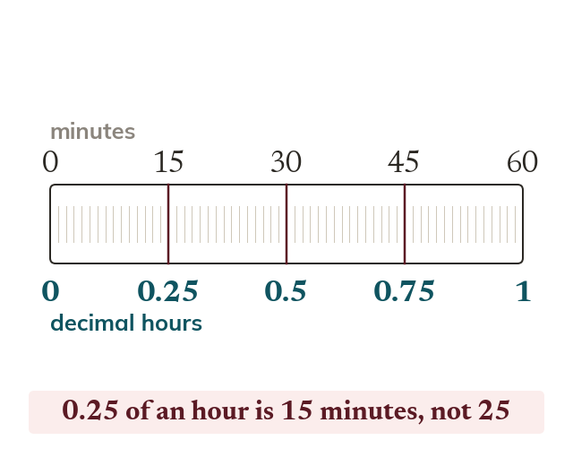

Base
Time uses base not base
The decimal part of an hour is a fraction of minutes. So hours is hours minutes.
Time is measured in base not base : seconds make a minute, and minutes make an hour. This means a decimal time like hours is NOT read digit-by-digit like money - the decimal part is a fraction of minutes, not a number of minutes itself.